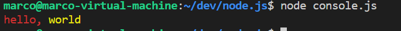

node.js 入门教程之二 -- Getting Started
V8 JavaScript Engine
V8 是 chrome 浏览器的 JavaScript Engine 名称，它是用来在 chrome 中获取和执行 JavaScript 代码的工具。V8 提供了一个 JavaScript 的运行环境，DOM 及其他 web API 是由 browser 提供的。
JavaScript Engine 是独立于其所寄生的浏览器的，这一特性才使 node.js 得以诞生。node.js 选择了 V8 Engine 且随着 node.js 的不断成长，大量服务端通过 JavaScript 编写的程序使用 v8 Engine。
基于 V8 同样可以创造桌面应用，例如 Electron 项目。
不同的浏览器有着各自的 Engine：
- Firefox has SpiderMonkey
- Safari has JavaScriptCore (also called Nitro)
- Edge was originally based on Chakra but has more recently been rebuilt using Chromium and the V8 engine.
所有的 Engine 都遵守 ECMAScript 标准。
在最初时候 JavaScript 被作为一种 interpreted language 解释型语言。但是现代 JavaScript Engine 不在单单 interpret 解释代码，而是要 compile 编译代码。
从 2009 年起，Firefox 将 SpiderMonkey 编译器集成到浏览器中，从此大家都开始引入这一方案。
JavaScript 代码被 V8 通过内部的 just-in-time (JIT) 编译器编译来提高执行效率。
命令行运行 node.js 代码
一般情况下在安装好 node.js 后，可以通过 node 命令执行 node.js 代码，需要传递被执行文件的路径：
node app.js
触发信号的使用
当在终端中执行 node.js 程序时，可以通过快捷键 ctrl C 退出程序。当我们下面介绍如果通过更加程序化的方式实现退出动作。
首先介绍第一种比较直接粗暴的方式：
process.exit()
通过调用 precess 模块的 exit function ，进程会立即被强行终止。这意味着任何它当前挂起的任务，正在传输的数据，对文件的访问和读写等都会被以一种不友好的方式终止掉。
process 不需要通过 require 的方式引入，他是默认被包含的。
你可以传递一个整型数字作为 exit code 退出码，不写的话默认为 0：
process.exit(1)
不同的退出码有不同的意义，你可以使用不同的退出码来和其他程序响应。各种退出码的意义：https://nodejs.org/api/process.html#process_exit_codes
你也可以提前设置退出码：
process.exitCode = 1
在后续执行到 process.exit 时会返回此处设置的值。
下面介绍更加友好的退出方式。
在上一节中，我们介绍了通过 http 模块搭建一个简单的 web 服务器，使用 express 模块也可以搭建 web 服务器，默认没有安装此模块，首先需要通过 npm 进行安装，模块会安装到当前路径下：
npm install express
新建 js 文件，内容如下：
const express = require('express')
const app = express()
app.get('/', (req, res) => {
res.send('Hi!')
})
const server = app.listen(3000, () => console.log('Server ready'))打开浏览器访问本地 3000 端口即可看到输出。
这个 web 服务会一直进行下去，如果调用了 process.exit()，当前的响应会立刻被终止，这是显然不太好的。
我们可以通过发送一个 SIGTERM 信号，然后处理对这个信号的响应。响应的动作可以是关闭这个 web 服务，上面的示例增加如下代码：
process.on('SIGTERM', () => {
server.close(() => console.log('process termimated'));
});这里我们监控一个 SIGTERM signal 作为一个 event 事件，然后响应关闭服务器的动作。
process.on 叫做 signal handler 信号响应器，用来定义接受的信号及对应的响应动作。这里定义当 SIGTERM 信号被触发后，执行关闭 server 动作及输出 log。
SIGTERM 是告诉系统将进程友好终止的信号。此信号被触发后，首先会执行 signal handler 信号响应器所定义的响应动作，也就是关闭 web 服务器，最后再终止对应进程。
SIGTERM 信号一般是由进程管理器，如：upstart，supervisord 发出。这里我们在程序内部触发此信号：
setTimeout(() => {
process.kill(process.pid, 'SIGTERM')
}, 3000);process.kill() method 用来将 signal 信号发送给对应 pid 进程。语法如下：
process.kill(pid, signal)
- pid
进程 ID - signal
| 要发送的信号, 大写字母的字符串或数字. 默认为: 'SIGTERM'
当 pid 对应进程不存在时将会 throw 一个 error。process.pid 返回值为当前程序的进程 ID。
虽然 process.kill 名称看起来是要终止一个进程，但是他的确仅仅是一个 signal sender 信号发送器。具体会有什么样的结果完全取决于发送的是什么信号，以及对应信号的响应。kill method 的文档：https://nodejs.org/api/process.html#process_process_kill_pid_signal
以上示例中，加入对 SIGTERM 信号的触发和响应后，效果为：首先开启一个 web 服务器，3 秒后会尝试关闭此服务器并输出 log，此处会等待服务器完全结束当前 request 才会结束，最后终止进程：
$ node express.js
Server ready
process termimated注意 Windows 下 signal handler 信号响应器会无效，以上示例如果在 Windows 下执行不会输出最后一行 log 信息。
常见的信号：
- SIGTERM 告诉系统需要友好的终止某个进程
- SIGKILL 立即结束对应进程，类似于
process.exit()的效果 - beforeExit 进程退出前会触发此信号
- exit 进程退出时会触发此信号
下面是一个对部分信号触发时间的测试：
process.on("beforeExit", () =>
console.log("before exit"));
process.on("exit", () =>
console.log("exit"));
console.log("running");以上程序执行后输出信息如下：
$ node process.js
running
before exit
exit更多信号的意义参考：signal(7) — Linux manual page
更多使用方法参考：Signal events
环境变量的读取
node.js 的核心模块 process 提供了 env properties 寄存了当前程序开始时的所有 environment variables 环境变量。执行以下命令可以输出所有变量：
console.log(process.env);
查看某一个变量：
console.log(process.env.HOME);
//-> /home/marco也可以设置自定义的环境变量并给其赋值：
console.log(process.env.TEST);
process.env.TEST = "dev";
console.log(process.env.TEST);
// output:
// undefined
// devnode.js REPL
通常情况下我们将代码写在 js 文件中，然后通过 node 命令执行：
node app.js
如果不指定需要执行的 js 文件，则会进入 REPL (Read Evaluate Print Loop) 编程环境，可以通过直接输入指令，逐行执行代码。
进入 REPL：
$ node
Welcome to Node.js v15.5.1.
Type ".help" for more information.
> 尝试输出 log 信息：
> console.log('test')
test
undefined
> 可以发现首先会输出指定的字符串内容，然后输出 undefined，它是 console.log function 的返回值。
同样在 REPL 中也可以使用 tab 键来自动补全指令名称。
输入 JavaScript object 名称和符号点.，然后点击 tab 键会输出指定 object 的所有 properties。例如 Array：
> Array.
Array.__defineGetter__ Array.__defineSetter__ Array.__lookupGetter__ Array.__lookupSetter__
Array.__proto__ Array.hasOwnProperty Array.isPrototypeOf Array.propertyIsEnumerable
Array.toLocaleString Array.valueOf
Array.apply Array.arguments Array.bind Array.call
Array.caller Array.constructor Array.toString
Array.from Array.isArray Array.length Array.name
Array.of Array.prototype
> Array.使用这种方式输出 global objects 全局可用的所有 objects：
> global.
global.__defineGetter__ global.__defineSetter__ global.__lookupGetter__ global.__lookupSetter__
global.__proto__ global.hasOwnProperty global.isPrototypeOf global.propertyIsEnumerable
global.toLocaleString global.toString global.valueOf
global.constructor
global.AbortController global.AbortSignal global.AggregateError global.Array
global.ArrayBuffer global.Atomics global.BigInt global.BigInt64Array
global.BigUint64Array global.Boolean global.Buffer global.DataView
global.Date global.Error global.EvalError global.Event
global.EventTarget global.FinalizationRegistry global.Float32Array global.Float64Array
global.Function global.Infinity global.Int16Array global.Int32Array
global.Int8Array global.Intl global.JSON global.Map
global.Math global.MessageChannel global.MessageEvent global.MessagePort
global.NaN global.Number global.Object global.Promise
global.Proxy global.RangeError global.ReferenceError global.Reflect
global.RegExp global.Set global.SharedArrayBuffer global.String
global.Symbol global.SyntaxError global.TextDecoder global.TextEncoder
global.TypeError global.URIError global.URL global.URLSearchParams
global.Uint16Array global.Uint32Array global.Uint8Array global.Uint8ClampedArray
global.WeakMap global.WeakRef global.WeakSet global.WebAssembly
global._ global._error global.assert global.async_hooks
global.buffer global.child_process global.clearImmediate global.clearInterval
global.clearTimeout global.cluster global.console global.constants
global.crypto global.decodeURI global.decodeURIComponent global.dgram
global.diagnostics_channel global.dns global.domain global.encodeURI
global.encodeURIComponent global.escape global.eval global.events
global.fs global.global global.globalThis global.http
global.http2 global.https global.inspector global.isFinite
global.isNaN global.module global.net global.os
global.parseFloat global.parseInt global.path global.perf_hooks
global.process global.punycode global.querystring global.queueMicrotask
global.readline global.repl global.require global.setImmediate
global.setInterval global.setTimeout global.stream global.string_decoder
global.sys global.timers global.tls global.trace_events
global.tty global.undefined global.unescape global.url
global.util global.v8 global.vm global.wasi
global.worker_threads global.zlib
> global.REPL 有一些特殊指令，以 . 开始：
.help: shows the dot commands help.editor: enables editor mode, to write multiline JavaScript code with ease. Once you are in this mode, enter ctrl-D to run the code you wrote..break: when inputting a multi-line expression, entering the .break command will abort further input. Same as pressing ctrl-C..clear: resets the REPL context to an empty object and clears any multi-line expression currently being input..load: loads a JavaScript file, relative to the current working directory.save: saves all you entered in the REPL session to a file (specify the filename).exit: exits the repl (same as pressing ctrl-C two times)
来自命令行的传递参数
在执行某个 js 文件时，你可以传入任意个数的数据作为传入参数供程序内使用。参数可以是独立的，也可以是以 key/value 形式：
node app.js jon
node appljs name=jon age=20如果使用第二种方式，则需要对其进行解析，后面会介绍。
通过访问 process 模块的 argv property 可以 retrieve 这些传入参数，argv 是一个数组，它的首个元素是 node 可执行文件路径，第二个元素是当前执行的 js 文件路径，其他元素就是传入参数数据。
我们新建 argv.js 文件内容如下：
process.argv.forEach((val, index) => {
console.log(`${index}: ${val}`);
});执行以下指令：
$ node argv.js ABC
0: /opt/node-v15.5.1-linux-x64/bin/node
1: /mnt/hgfs/Development/node.js/argv.js
2: ABC可以看到第三个元素是我们传入的数据。
可以通过 array 的 slice method 将所有传入参数单独提取出来：
const val = process.argv.slice(2);
slice 语法如下：
array.slice(start, end)
将指定的数组范围内的元素生成一个新数组并返回，start 参数为起始元素索引，end 为终止元素索引，end 默认值为原数组最后一个元素。
如果传入参数没有定义索引 key：
node app.js jon
使用以下方法调用：
const val = process.argv.slice(2);
console.log(val[0]);如果传入参数定义了索引 key：
node app.js name=jon
此时 args[0] 的值为 name=joe，需要对其进行解析操作，最简单的是使用 minimist 库实现(先通过 npm 安装)：
const args = require('minimist')(process.argv.slice(2));
console.log(args['name']);
console.log(args['age']);此时我们需要在传入参数的索引 key 前加双横杠--:
$ node argv.js --name=jon --age=20
jon
20命令行输出
node.js 提供了一个 console 模块提供了很多有用的方法来在命令行下交互信息。它同浏览器下的 console object 类似。
最基础的就是 console.log method，可以将传入数据输出为字符串到终端。如果传入一个 object，会将其渲染为 string。
你可以输出多个数据，例如：
let a = 1;
let b = 2;
console.log(a, b);
//output:
//1 2可以使用连接符来组合字符串和变量：
console.log('num1 is ' + a + ', num2 is ' + b)
通过传入变量和一个对应的 format specifier 格式占位符来使格式解析更加明晰：
console.log('num1 is %s, num2 is %s', a, b)
- %s 格式化一个变量成字符串
- %d 格式化一个变量成数字
- %i 格式化一个变量成整数
- %o 格式化一个变量为 object
调用 clear method 可以清空当前终端的信息:
console.clear();
count method 可以实现对一个输出字符串的累计计数，输出字符串的同时会显示此字符串已经输出的次数，执行以下代码：
console.count('count1')
console.count('count2')
console.count('count1')
console.count('count1')输出结果为：
count1: 1
count2: 1
count1: 2
count1: 3结合 time 和 timeEnd method 可以计算执行一段代码花费的时间：
const doSomeThing = () => console.log('test');
const measureTime = () => {
console.time();
doSomeThing();
console.timeEnd();
}
measureTime()
//output:
//test
//default: 5.937ms以上示例中，调用 console.time() 开始计时，调用 console.timeEnd() 终止计时并返回总时间。
通过 console.log 等输出到终端的信息称之为 standard 标准输出：stdout，通过 console.error 会输出到 stderr stream 流，不会显示到终端而是输出到了 error log。
可以通过 escape sequences 转义序列来给输出信息添加颜色，执行下面示例：
console.log('\x1b[31m%s, \x1b[33m%s', 'hello', 'world')
输出如下：

\x1b[ 后跟对应颜色的数字编号即可：
- 30m Black
- 31m Red
- 32m Green
- 33m Yellow
- 34m Blue
- 35m Purple
- 36m Cyan
- 37m White
但这种方法比较麻烦，输入也不太友好。
最好的方式是通过 Chalk 库来实现这个功能，它不仅可以修改颜色，还可以设置粗体，下划线，斜体等效果。需要通过 npm install chalk 安装库。
使用方法如下：
const chalk = require('chalk')
console.log(chalk.yellow('hello world'))这种方法使代码更加清晰可读。更多 chalk 使用方法参考：https://github.com/chalk/chalk
创建进度条
Progress 模块可以用来在终端创建进度条效果，通过 npm install progress 安装。
下面示例创建一个 10 级的进度条，每 100 ms 进一格，完成后取消定时器：
const ProgressBar = require('progress')
const bar = new ProgressBar(':bar', { total: 10 })
const timer = setInterval(() => {
bar.tick();
if (bar.complete) {
clearInterval(timer);
}
}, 100);每调用一次 bar.tick() 就会前进一格，可以在程序中添加进度条来提示进度。
命令行输入
下面介绍如何在命令行下进行输入输出交互。
node.js 从 version 7 开始提供了 readline module 可以在程序运行期间获取一个可读取的 stream 流的数据，如 process.stdin stream，一次读取一行数据。
请看下面示例：
const readline = require('readline').createInterface({
input: process.stdin,
output: process.stdout
});
readline.question("what is your name\n", name => {
console.log(`Hi, ${name}`);
readline.close();
});
//output:
//what is your name
//marco
//Hi, marcoquestion() method 显示第一个参数数据到命令行，然后等待用户输入数据，当用户输入数据并敲回车后会自动调用定义的 function，并将输入数据作为传入数据。
readline 的更多用法参考：https://nodejs.org/api/readline.html
但需要输入一个密码时，我们希望在输入时可以隐藏输入的信息，我们可以通过 Inquirer.js 模块来实现需求。
Inquirer.js 项目地址：https://github.com/SBoudrias/Inquirer.js
通过 npm 安装：
npm install inquirer
inquirer 可以实现很多输入交互方式，如：常规输入，密码，列表，选项框等，下面举例说明：
const inquirer = require('inquirer')
var questions = [
{
type: 'input',
name: 'name',
message: 'what is your name\n',
default: function () {
return 'Doe';
}
},
{
type: 'input',
name: 'age',
message: 'how old are you?\n'
},
{
type: 'input',
name: 'phone number',
message: 'please input your phone number\n',
validate: function (value) {
var pass = value.match(
/^1[3|4|5|6|7|8|9][0-9]{9}$/
);
if (pass)
return true;
else
return 'Please enter a valid phone number';
}
},
{
type: 'password',
name: 'password',
message: 'your password\n'
}
];
inquirer.prompt(questions)
.then(answers => {
console.log(`Hi, ${answers['name']}, you age is ${answers['age']}, your phone number is ${answers['phone number']}`);
});questions 数组定义了需要输入的内容，可以定义多项输入信息，每个输入内容都是一个独立的 question object 用来定义这个 question 具体的模式，下面介绍最常用的几个 properties：
- type 提示框的类型，默认为 input，可选项有: input, number, confirm, list, rawlist, expand, checkbox, password, editor
- name 定义了此 question 的名称，用来在 answers 中读取数据时使用
- message 定义一个打印输出的字符串提示信息
- default 如果没有输入内容，则使用此处定义的默认值，可以是变量或 function
- validate 用来判断输入信息是否满足一定条件，如果满足则返回 true，不满足返回预定一个提示信息并停留在当前 question 等待用户修改输入内容
更多使用 question object 的属性参考：https://github.com/SBoudrias/Inquirer.js#question
在上面的示例中，通过 validate function 判断电话号码是否有效，通过 string 的 match method 使用正则表达式来匹配信息。match method 语法如下：
string.match(regexp)
注意 regexp 是一个字符串，需要使用斜杠/来包围，如：
var str = "abcdefab";
if (str.match(/ab/))
console.log(true);
else
console.log(false);
//output:
//true还可以使用修饰符来设置正则匹配限制，可用的修饰符有 g 和 i，放在正则表达式结尾斜杠/后面。
g 修饰符表示 global 全局查找，当使用 g 时，所有匹配结果将会返回，当不使用 g 时，只有第一个匹配的结果会返回，且包含其 groups，index 等信息：
var str = "abcdefab";
console.log(str.match(/ab/));
console.log(str.match(/ab/g));
//OUTPUT:
//[ 'ab', index: 0, input: 'abcdefab', groups: undefined ]
//[ 'ab', 'ab' ]i 修饰符用来设置忽略大小写：
var str = "abcdefabAB";
console.log(str.match(/ab/g));
console.log(str.match(/ab/gi));
//OUTPUT:
//[ 'ab', 'ab' ]
//[ 'ab', 'ab', 'AB' ]当 question object 的 type 定义为 password 类型时，输入时信息会被隐藏。
prompt method 用来显示提示框，传入参数就是预定义的 question 数组，其返回值为 promise 类型，所以可以通过 then method 来实现异步响应。promise 的用法参考：https://blog.niekun.net/archives/2011.html
这里通过 then method 定义了 success 的 function，传入参数就是用户输入的数据构成的 object，通过 question object 中 name property 定义的名称来索引到具体的某个输入数据。
更多 inquirer 示例：https://github.com/SBoudrias/Inquirer.js/tree/master/packages/inquirer/examples